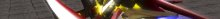

Low-cost unit, cheap ammunition
X: Machine Gun
C: Short Beam Saber
←+C: Left side attack
→+C: Right side attack
A: Grenade (Single Shot)
D: Grenade (Multi Shot)
F: Machine Gun Rapid Firing
V: Guard
Durability: 1300
Remaining lives: 4
Next Unlock :
Millennium
Low-cost unit, cheap ammunition
X: Machine Gun
C: Beam Saber
←+C: Left side attack
→+C: Right side attack
A: Grenade (Multi Shot)
D: Crazy Ball
F: Machine Gun Rapid Firing
V: Guard
Durability: 1300
Remaining lives: 4
Next Unlock :
Millennium R
Millennium with beam weapon
X: Beam Rifle
C: Beam Saber
←+C: Left side attack
→+C: Right side attack
A: Grenade (Triple Shot)
D: Crazy Ball
F: Beam Rifle Rapid Firing
V: Guard
Durability: 1300
Remaining lives: 4
Next Unlock :
Millennium B
Millennium with ballistic weapons
X: Bazooka
C: Beam Saber
←+C: Left side attack
→+C: Right side attack
A: Rail Cannon
D: Mid-Sized Missile
F: Defense Posture Shelling
V: Guard
Durability: 1200
Remaining lives: 4
General-purpose unit with missile
X: Beam Rifle
C: Beam Saber
←+C: Left side attack
→+C: Right side attack
A: Micro-Missile
D: M.I.R.V. Missile
F: Mid-Sized Missile
V: Guard
Transformation
Transform X: Beam Rifle
Durability: 1550
Remaining lives: 3
Next Unlock :
Whistler Windom XP Type-B
Long-range missile bomber unit
X: Bazooka
C: Twin Cannon
←+C: Melee catch blast
→+C: Anti-air fire
↓+C: Quick fire twin cannon
A: Micro-Missile
D: M.I.R.V. Missile
F: Cruise Missile
V: Guard
Transformation
Transform X: Bazooka
Durability: 1500
Remaining lives: 3
Next Unlock :
Whistler Windom XP SP-3
Short-range general-purpose unit
X: Beam Rifle
C: Two-Handed Beam Sword
←+C: Left side attack
→+C: Right side attack
↓+C: Forward piercing
A: Shield Boomerang
D: All-Range Attack
F: Beam Rifle Rapid Firing
V: Guard
Special move:
↓+C+A: Diving stab
Durability: 1700
Remaining lives: 2
General-purpose assault unit
X: Beam Rifle
C: Long Beam Saber
←+C: Left side attack
→+C: Right side attack
A: Guided Plasma-Laser
D: All-Range Attack
F: High-Intensity Laser
V: Guard
Durability: 1800
Remaining lives: 2
Next Unlock :
Windom BlackComb
Kata-style assault unit
X: Twin Beam Gun
C: Hand to Hand Combat
←+C: Left side attack
→+C: Right side attack
↓+C: Heel drop
A: Mid-Sized Beam Cannon
D: All-Range Attack
F: Zero Distance Shooting
V: Guard
Special move:
↓+C+A: Knockdown shooting
Durability: 1750
Remaining lives: 2
Next Unlock :
Windom Talisker
General-purpose variable unit
X: Beam Rifle
C: Twin Beam Saber
←+C: Left side attack
→+C: Right side attack
A: Diffusion Plasma-Laser
D: Mid-Sized Missile
F: Rail Cannon
V: Guard
Transformation
Transform X: Beam Rifle
Transform A: Mid-Sized Missile
Transform D: Air-to-Ground Bombing
Durability: 1250
Remaining lives: 3
Next Unlock :
Asteroid Windom 2000 SP-1
High-speed variable assault unit
X: Thunder Beam Rifle
C: Twin Beam Saber
←+C: Left side attack
→+C: Right side attack
A: Diffusion Plasma-Laser
D: Diffusion Guided Laser
F: Rail Cannon
V: Guard
Transformation
Transform X: High-Speed Plasma-Laser
Transform A: Diffusion Plasma-Laser Missile
Transform D: Air-to-Ground Bombing
Transform F: Rail Cannon
Durability: 1300
Remaining lives: 2
Next Unlock :
Longhorn Windom Vienna
High-output heavy assault unit
X: Twin Beam Rifle
C: Twin Anti-Warship Beam Sword
←+C: Left side attack
→+C: Right side attack
A: Trap Laser
D: All-Range Attack
F: High-Intensity Laser
V: Optical Reflect Defense
V+F: Light physical guard
Durability: 2000
Remaining lives: 1
High-mobility heavy assault unit

X: Beam Rifle
C: Double-Ended Beam Saber
←+C: Left side attack
→+C: Right side attack
↑+C: Assault kick
A: Shield Smash
D: Sway Shot
F: High-Intensity Laser
V: Guard
Durability: 2250
Remaining lives: 1
Next Unlock :
Linux Cymbidium
Special field support unit
X: Fireball
C: Halberd
↑+C: Stab
↓+C: Crystal concession
A: Mid-Range Guided Laser
D: Summon Crystals
F: Magic Circle Activation
V: Guard
Durability: 1500
Remaining lives: 2
Next Unlock :
Linux Anthurium
Close-range high-mobility unit
X: Sword Impact
C: Saber
←+C: Left side attack
→+C: Right side attack
↑+C: Rapid piercing
↓+C: Guard slash
A: Plasma Arrow
D: Surge
↓+D: Swoop
F: Aura Blade
V: Guard
Special move:
↑+C+A: Plasma Arrow Pile Bunker
↑+C+D: Blow piercing
Durability: 1850
Remaining lives: 2
Next Unlock :
Linux Primula
Over-range heavy bomber unit
X: Beam Rifle
C: Rapid Shelling
←+C: Stun Laser
→+C: Anti-air fire
↓+C: Sliding shot
A: Long-Range High-Speed Laser
D: Heavy Rail Cannon (Penetrating)
F: Buster Launcher Cannon
V: Generator charge (Energy and Ex)
V+F: Light physical guard
Boost Dash A - Bazooka
Boost Dash D - Micro-Missile
Durability: 2150
Remaining lives: 1
High-output special assault unit
X: Attribute Shot
C: Magic Halberd
↑+C: Melee knock-down
↓+C: Attribute Change
A: Attribute Magic Activation
D: Summon Attribute
F: High-Intensity Magic Activation
V: Guard
Transformation (High-mobility mode)
Transformation X: High-speed mode
Any mode A: Attribute Magic Activation
Durability: 1950
Remaining lives: 1
Next Unlock :
Linux Ranunculus
Advanced, close-range Millennium
X: Beam Rifle
C: Twin Beam Saber
←+C: Left side attack
→+C: Right side attack
A: Grenade (Single Shot)
D: Shield Boomerang
F: Wire
V: Guard
Durability: 1300
Remaining lives: 3
Close-range light assault unit
X: Beam Rifle
C: Katana
←+C: Left side attack
→+C: Right side attack
↓+C: Melee knock-down
A: Shield Smash
D: Counter
F: Three-Rotation Attack
V: Guard
Durability: 1330
Remaining lives: 3
Next Unlock :
Windom Talisker WP
Talisker armed with Weapon Pack
X: Beam Rifle
C: Twin Katana
←+C: Left side attack
→+C: Right side attack
A: Gatling Cannon
D: Twin Rail Cannon
F: Full Arsenal Attack
V: Guard
Durability: 1650
Remaining lives: 2
Sword manipulating unit
X: Throwing Sword
C: Bastard Sword
←+C: Left side attack
→+C: Right side attack
A: Sway Shot
D: Summon Swords
F: Multi-Directional Piercing
V: Light physical guard with Throwing Sword
Guard with Bastard Sword
Durability: 1900
Remaining lives: 2
Next Unlock :
Linux Licorice
Close-range high-mobility unit
X: Fireball
C: Katana
←+C: Left side attack
→+C: Right side attack
A: Evasion Surge
D: Flame Blade
F: Iaigiri
V: Light physical guard
Special move:
↓+C+A: Ground Slam
C after Ground Slam: Light Iaigiri
Durability: 1900
Remaining lives: 2
Next Unlock :
Linux Fennel
Melee-range assault, support unit
X: Shield Guard
C: Sword
←+C: Left side attack
→+C: Right side attack
A: Magic Barrier
D: Magic Shield (buff team mate)
F: Cyclic Sword Impact
V: Guard
Durability: 1700
Remaining lives: 2
Next Unlock :
Linux Anise
Close-range assault unit
X: Shield Guard
C: Cannon Lance
←+C: Load cartridge (Three at a time)
→+C: Anti-air fire (Requires three cartridges)
A: Piercing Rush
D: Shelling (Requires one cartridge)
F: Heavy Shelling
V: Guard
Special move:
A at the end of the combo: Upward throw
(Third hit of the standard combo.)
Durability: 1950
Remaining lives: 2